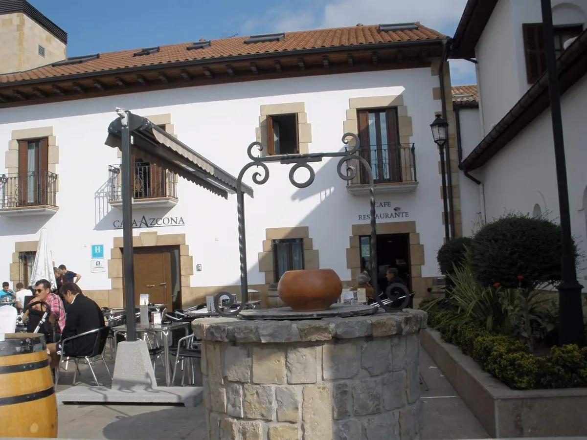

Fronteras que votan distinto · Elecciones: 23 de julio de 2023
Cizur y Zizur: 1,4 kilómetros, 31 puntos
Cizur y Zizur Mayor, a 1,4 kilómetros: 31 puntos de diferencia en el voto a la derecha
Por Nacho G. del Álamo ·
En Cizur, PP (con UPN), Vox y Cs sacaron el 23J el 66,3 % del voto. En Zizur Mayor, su vecino, el 35,5 %. Los centros de sus términos municipales están a 1,4 kilómetros. En la misma corona de Pamplona, Ansoáin y Villava votan a la derecha 17,8 y 14,2 puntos menos de lo que predice su perfil, y en Villava ganó EH Bildu.
Dato: verificable y reproducible
Ver Cizur en el mapa →Ver Zizur Mayor en el mapa →Ver Ansoáin en el mapa →Ver Villava en el mapa →
La pregunta: ¿Cuánto cambia el voto de un municipio a otro dentro de la Cuenca de Pamplona?
Un mosaico alrededor de la capital
DatoPamplona votó el 23J casi lo que predice su perfil: un 39,4 % para PP y UPN, Vox y Cs, frente a un 36,5 % previsto. El conjunto de Navarra, un 37,6 %. Alrededor de la capital, en un radio de pocos kilómetros, el voto se reparte de forma mucho más desigual.
Cizur y Zizur Mayor
DatoCizur es un municipio de 3.684 habitantes con la renta más alta de la tabla, 32.016 euros por unidad de consumo. Allí PP y UPN sacaron el 52,0 % y Vox el 14,4 %. El modelo le asigna a la derecha un 39,6 %; votó un 66,3 %.
DatoZizur Mayor, con 15.977 habitantes y 27.860 euros de renta, votó un 35,5 % a la derecha, casi lo previsto (37,8 %). Allí EH Bildu sacó el 17,0 % y el PSOE el 25,0 %.
PatrónParte de la distancia acompaña a la renta, que es más alta en Cizur. Pero el modelo ya cuenta con ella, y aun así Cizur vota 26,8 puntos más a la derecha de lo previsto.
El otro lado: Ansoáin y Villava
DatoEn Ansoáin, PP y UPN sacaron el 14,6 % y la derecha sumó un 18,4 %, frente a un 36,2 % previsto. Ganó el PSOE con el 35,0 %.
DatoEn Villava, EH Bildu fue el partido más votado, con el 30,7 %. La derecha se quedó en el 22,5 %.
DatoBurlada (−8,1) también vota menos a la derecha de lo previsto; Barañáin (−2,4), Zizur Mayor y Berrioplano (−0,5), casi lo previsto; el Valle de Egüés (+5,5) y Cizur, más.
Sobre el terreno
DatoZizur Mayor formó parte de la Cendea de Cizur hasta el 6 de noviembre de 1992, cuando se separó de ella y se constituyó en municipio propio. Fuentes: 1, 2
Lo que no sabemos
- HipótesisQué separa a estos municipios además de la renta: la composición por origen de sus vecinos, la historia de su crecimiento urbano o la presencia del euskera. Ninguna de esas hipótesis está contrastada aquí con dos fuentes.
Dato: verificable y reproducible. Patrón: relación descriptiva, sin causa. Hipótesis: explicación posible que aún no tiene dos fuentes independientes.
Los datos
| Municipio | Habitantes | Renta (€/u.c.) | PP + UPN | PSOE | EH Bildu | Derecha | Previsto | Diferencia | Gana |
|---|---|---|---|---|---|---|---|---|---|
| Ansoáin/Antsoain | 10.549 | 22.572 | 14,6 | 35,0 | 23,3 | 18,4 | 36,2 | −17,8 | PSOE |
| Villava/Atarrabia | 9.832 | 24.768 | 19,3 | 26,5 | 30,7 | 22,5 | 36,7 | −14,2 | EH Bildu |
| Burlada/Burlata | 20.620 | 22.883 | 24,1 | 29,9 | 19,6 | 28,1 | 36,2 | −8,1 | PSOE |
| Barañáin/Barañain | 19.264 | 25.250 | 30,1 | 30,4 | 15,8 | 35,2 | 37,6 | −2,4 | PSOE |
| Zizur Mayor/Zizur Nagusia | 15.977 | 27.860 | 30,0 | 25,0 | 17,0 | 35,5 | 37,8 | −2,3 | PP |
| Berrioplano/Berriobeiti | 7.472 | 25.842 | 30,3 | 23,6 | 17,1 | 37,6 | 38,1 | −0,5 | PP |
| Pamplona/Iruña | 205.365 | 25.201 | 34,5 | 24,7 | 17,7 | 39,4 | 36,5 | +2,9 | PP |
| Valle de Egüés/Eguesibar | 22.132 | 27.495 | 35,0 | 20,9 | 14,4 | 42,5 | 37,1 | +5,5 | PP |
| Cizur | 3.684 | 32.016 | 52,0 | 14,3 | 7,6 | 66,3 | 39,6 | +26,8 | PP |
Método y fuentes
- Qué se compara
- Pamplona y ocho municipios de su área metropolitana, entre sí y frente a lo que predice el modelo municipal de esta serie.
- Límites
- La distancia (1,4 km) es entre los centroides de los dos términos municipales, no entre sus cascos urbanos. «PP» incluye a UPN, que en 2023 se presentó por separado. Cizur es pequeño (3.684 habitantes).
- Metodología completa
- Cómo se calculan los porcentajes, el modelo, los gemelos y los escaños
- Fuentes
- Ministerio del Interior, resultados electorales por mesa (Infoelectoral). Congreso 2004-2023 vía pollspaindata, commit ee5ecda; municipales 2007-2023 de los ficheros de Infoelectoral
- INE, Atlas de Distribución de Renta de los Hogares 2023 (renta, edad, población), vía ineAtlas.data
- INE, Censo de Población y Viviendas 2021 (estudios, paro, extranjeros)
- Autoría
- Nacho G. del Álamo
- Revisión de datos y texto
- Nacho G. del Álamo, 7 de octubre de 2026
- Publicado · actualizado
- 7 de octubre de 2026 · 8 de octubre de 2026
- Correcciones
- Ninguna. Historial del Atlas
Sigue leyendo
- Fronteras que votan distintoOntígola, uno de los 36 municipios donde ganó Vox
- Fronteras que votan distintoSant Cugat y Badia: 5,4 kilómetros, 23 puntos
- Voto dobleEn las europeas, la brecha entre ricos y pobres se dispara
Todas las piezas de «Fronteras que votan distinto» · Todo el Atlas